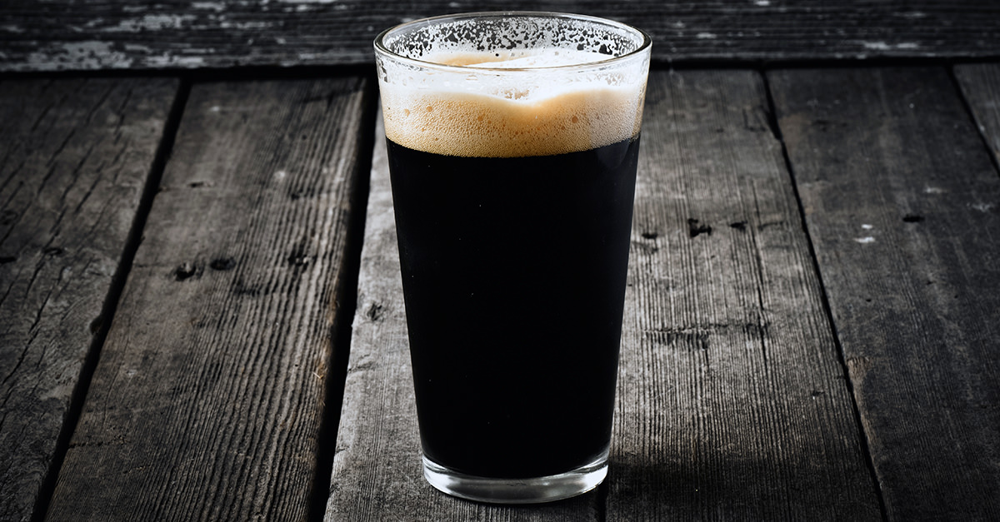

What is the main difference between Lager and Ale(Lager vs Ale)?
The main difference between Lager and Ale is Lager yeast is fermented at colder temperatures and for much longer, resulting in a crisper, more attenuated beer with no fruity esters. Ale fermentations are usually complete within a few days at temperatures as high as 20°C, whereas lager fermentations at as low as 6°C can take several weeks.
U.S. lager will typically contain 20% more alcohol (at least) than an ale from England.
Lager Beer and Snacks on Table
Comparision Chart for Lager and Ale(Lager vs Ale)
The technical difference between lager and ale is simple. They use different yeast strains. Both types of yeast combine with sugars that come from the malt in beer to ferment, the process that makes beer alcoholic. Ale yeasts do this primarily at the top of the fermenting vessel, and they thrive at around room temperature, whereas lager yeast dance the tango at cooler temperatures and most of the fermentation occurs in the bottom of the fermenting tank. When beer was fermented in open wooden vats, fermentation was easier to watch. Both lage and ale yeast did the same thing, but lager yeast may have been stronger than the typical ale yeasts in use, possibly resulting in more visible carbonation.
Lager differs from ale in two important ways:
Lager beers are fermented using a species of yeast called Saccharomyces pastorianus. Unlike ale yeast, S. pastorianus works well in the cold, usually a frigid 45 to 55 degree Fahrenheit or 7 to 13 degree celsius.
Lager beers traditionally undergo a period of near-freezing maturation that may last anywhere from a couple of weeks to a year or longer, depending on the beer style and the brewer's intent. In fact, the word lager itself derives from the German lagern, meaning "to store" or "to keep".
Most top-fermented beers are called ales. The yeast employed is Saccharomyces cerevisiae, a top-fermenting yeast. Usually, ale fermentation occurs at a temperature higher than that for lager. The duration of fermentation, however is shorter. Another fundamental difference between Lager and Ale is the method of mashing. Lagers are produced by decoction mashing while the ales are produced by infusion mashing.
Beer Styles
Fundamentally beers may be divided into ales, lagers, and stouts. Traditionally, ales and stouts were brewed with top-fermenting yeasts, those that migrate to the surface of the fermenting vessel, in open vessels from which the yeast was “skimmed” as a means of collection. They were dispensed at relatively warm temperatures (10–20˚C). Lagers, on the other hand, were traditionally produced using bottom-fermenting yeasts, which sedimented during the process and were collected from the base of the vessel; the dispensing temperature was cool (0–10˚C).
Lager
A pale straw coloured beer produced from a lightly kilned malt and fermented by bottom-fermenting yeast (Saccharornyces carlsbergensis) at a low temperature (7-13 degree C) and matured for several weeks. The term 'lager' is used by many, inaccurately, as a synonym for Pilsner. Lager as a term is really an umbrella description for relatively pale beers, fermented and dispensed at low temperatures.
Lager beer styles are usually differentiated from their ale counterparts by the use of bottom-fermenting yeast strains. These strains work best at lower temperatures than are necessary for most ale fermentations. Lager beers also typically incorporate long-term secondary conditioning. This often lasts weeks or even months longer than a typical ale fermentation.
Lager is a type of beer, traditionally pale, produced by bottom-fermenting yeast and produced in a relatively slow process, which includes lengthy cold storage ('lagering'). The word 'lager' is derived from the German "to store."
Vienna Lager is just one of many classic lager styles that craft brewers are rediscovering and, in some cases, reinventing.
Story of a Lager
The production of lager demanded ice. Accordingly, such beer had to be brewed in winter for storage (lagering) until the greater summer demand. Such protocols were possible in Milwaukee using the ice from Lake Michigan and local caves for storing the beer. Milwaukee rapidly emerged as the great brewing center of the states, with Pabst and Schlitz among those competing with Miller. Once machines were developed to produce ice, then lager could be brewed any time—and anywhere. And the application of Pasteur’s proposals for heat-treating beer to kill off spoilage organisms and the advent of bottle and stopper technology meant that beer could be packaged for home consumption and consumed almost anyplace, after shipment nationwide on the burgeoning rail network in railcars that were developed with the latest refrigeration technology.
Boston lager:
Vienna Lager 4.9% ABV
Complex flowery/piney nose. Full- bodied, with caramel in the middle, and a satisfyingly dry finish
Black lager:
Schwarzbier 4.9% ABV
Roasted but smooth, with caramel and nuts on the palate. Coffee notes throughout, providing a pleasing closing bitterness.
Black Lager beer is dark in colour, like stout. The dark colour comes from darkly-roasted grains.
Ale
The word 'ale' comes from the Old English ealu. Originally an unhopped but fermented malt drink, the term ale nowadays refers to any beer produced at temperatures of between 16 and 21 degree C (most frequently around 18 degree C) using a top-fermenting yeast (Saccharomyces cerevisiae). Ale fermentations are usually complete within a few days at temperatures as high as 20°C, whereas lager fermentations at as low as 6°C can take several weeks.
In Norman times ale was used for casting out devils: the trick was to mix some herbs with ‘clean ale’, sing seven masses over the drink, add garlic and holy water and then drink it from an inverted church bell (King 1947).
Ale is a type of beer generally characterized by an amber color and tradition- ally produced using a top-fermenting yeast. (In medieval England, ale meant unhopped beer, but this no longer applies.)
Barley Wine Ale:
Barley Wine 10.4% ABV
Cellared in a former gold mine. Rich and smooth, with dark caramel, cherries, and plums. Nicely balanced.

Winter Ale:
Winter Beer 6.4% ABV
Spruce intermingles with fruit at the start. Modestly rich on the palate, woody at the finish.
- Red Brick Ale:
Brown Ale 6.5% ABV
Surprisingly strong. Caramel and toffee throughout, with underlying notes of chocolate and coffee.
India Pale Ale:
India Pale Ale 6.3% ABV
Piney, oily nose, with grapefruit and orange from the aroma to the palate. Unapologetically bitter.
Yellowtail Pale Ale:
Kölsch 4.6% ABV
Soft and sweet on the nose with a hint of spices. Dry cracker flavors yield to a floral, but still dry finish.
Two hearted ale:
India Pale Ale 7% ABV
Amplified hops, with an initial rush of grapefruit and orange mingling with fresh floral notes. Perfectly balanced, with persistent bitterness
Raspberry strong ale:
Fruit Beer 9% ABV
Brewed with fresh berries and released for Valentine’s Day. Scarily nicknamed 'Truth Serum.'
Scape goat pale ale:
Pale Ale 4.7% ABV
Biscuity, fruity, and spicy on the palate, balanced by moderate bitterness. Short but dry finish.